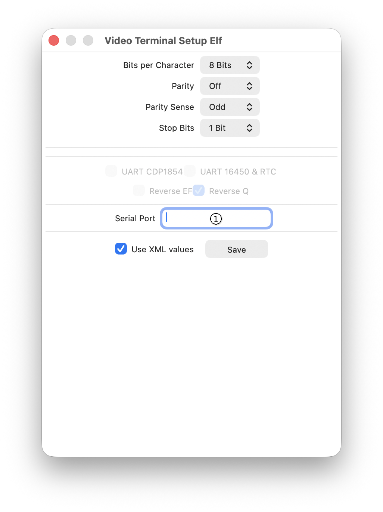

To use Emma 02 with an external terminal, additional software is required.
Note: On Linux, socat will not work; use tty0tty instead (see below).
Note: This has not been verified on macOS.
Serial terminal software is required. For Windows, ZOC7 has been tested. For Ubuntu, Minicom has been tested. Other serial terminal emulators should also work.
Both Emma 02 and the serial terminal software communicate via a serial port on the host PC. One option is to connect two physical serial ports with a cable; however, using a serial port emulator is recommended. This creates two virtual ports on the host PC and connects them.
One of the ports must be specified in the Serial Port text field (1) via the Terminal Setup window shown below, and the second port in the external serial terminal software.

On Windows, the following have been tested: Null-modem emulator (com0com) (free), Virtual Serial Port Driver from Eltima Software, and Virtual Serial Port Emulator (VSPE) from Eterlogic.
On Linux, the free Null-modem emulator (tty0tty) has been tested.
Important: Terminal emulation is not possible when using Intel 8275 emulation on the COSMAC Elf 2000.